Data 201 · Week 10
Splitting, impurity, pruning, and interpretation
Rebin Muhammad
Montgomery College
Today
01
The idea
A tree is a sequence of yes/no questions.
02
Regression
Means in leaves. Splits by RSS.
03
Classification
Majority class. Splits by impurity.
04
Pruning
Full trees memorize. Limit them.
05
Reading
Rules, importances, and limits.
Warm-up
guesswhoonline.com — then we will see how a computer learns which questions to ask.
The idea · Guess Who Online
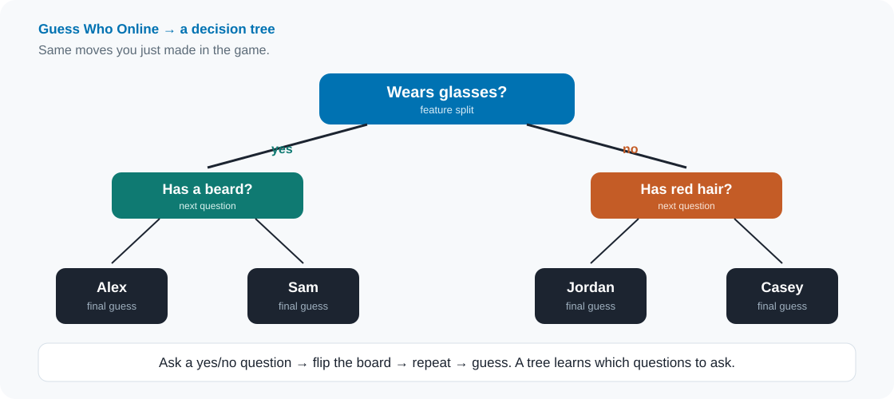
The idea · another example
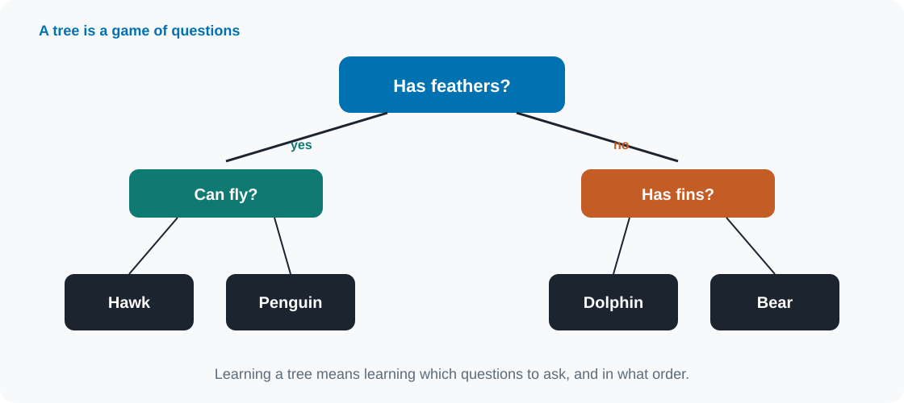
Two jobs
Regression
Predict a number
Example: a baseball player’s salary.
Each leaf predicts the mean response in that leaf.
Splits minimize RSS.
Classification
Predict a class
Example: will a customer buy?
Each leaf predicts the majority class.
Splits reduce impurity (Gini or entropy).
Anatomy
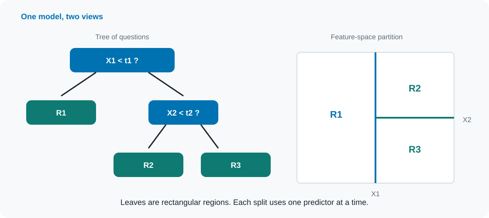
Parts of a tree
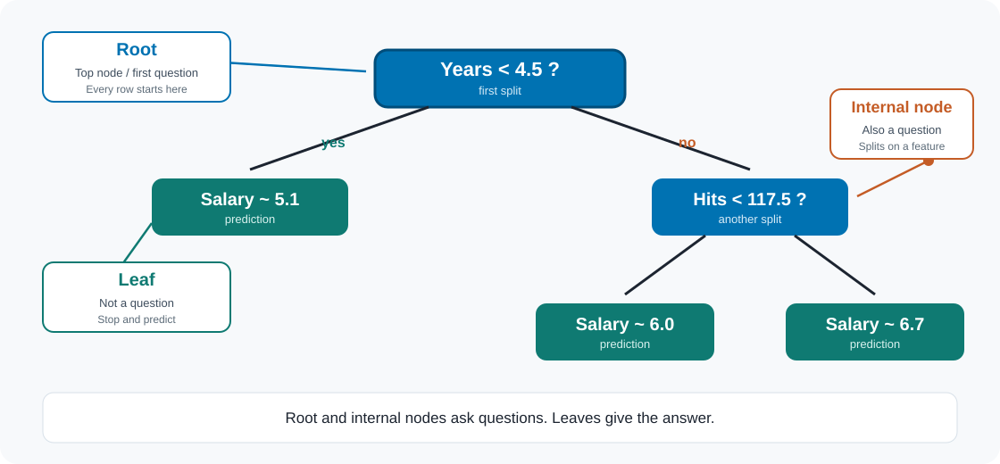
Part 1
Divide the space into boxes. Predict the mean in each box.
Hitters
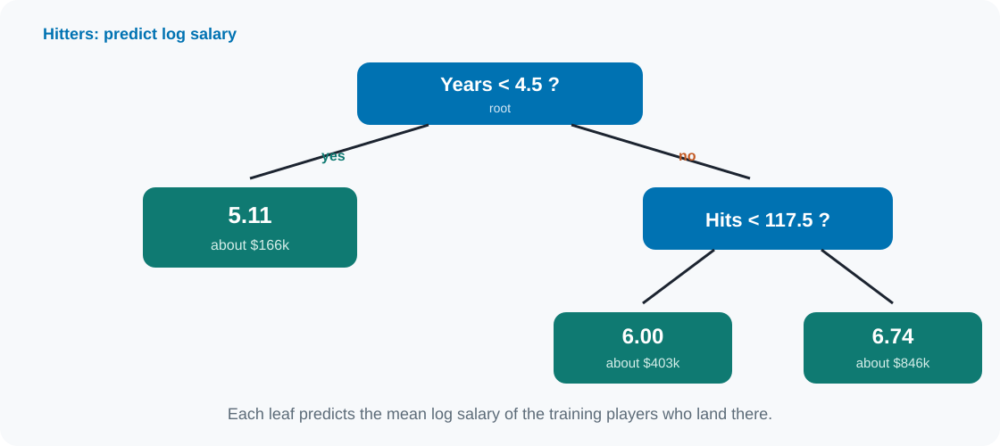
Same tree
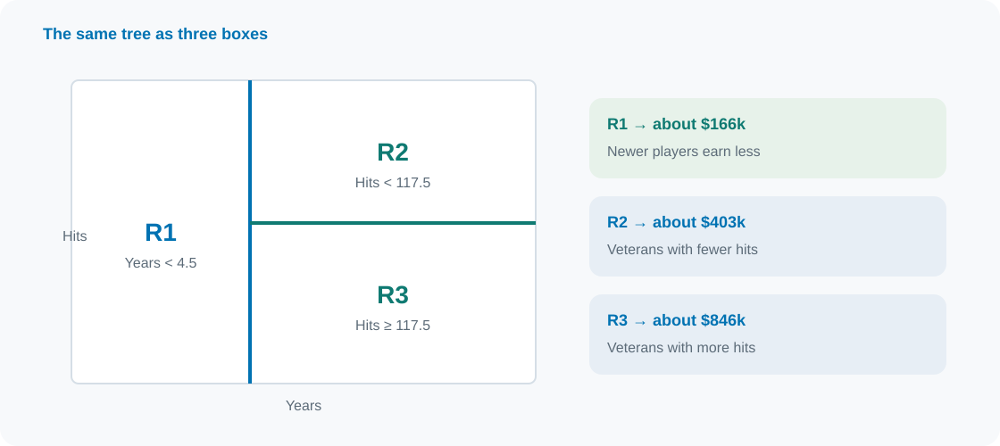
How it predicts
1
Divide the space
Split on one predictor at a time into non-overlapping rectangular regions.
2
Predict the mean
Every new point in a region gets the mean response of the training points in that region.
Growing the tree
Top-down
Start with all training rows in one region, then split again and again.
Greedy
At each step, pick the feature and cutpoint with the lowest RSS. Do not look ahead.
Stopping rules
Stop by depth, minimum leaf size, or later pruning. Perfect purity on the training set is not the goal.
Part 2
Same recipe. Impurity replaces RSS.
Impurity
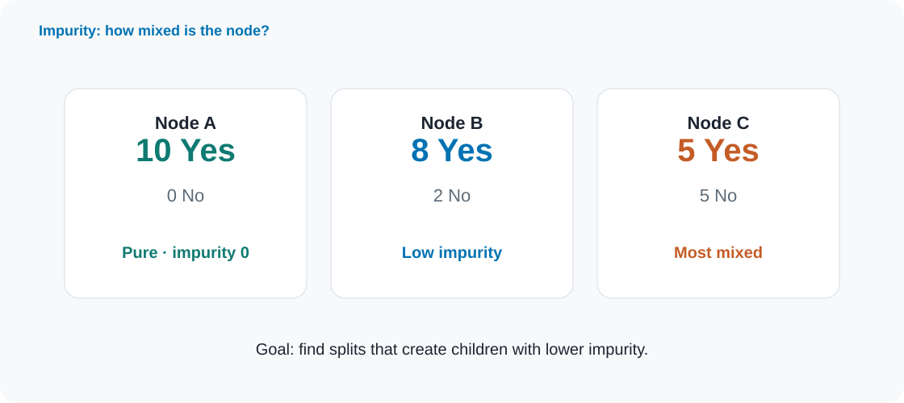
Scoring a node
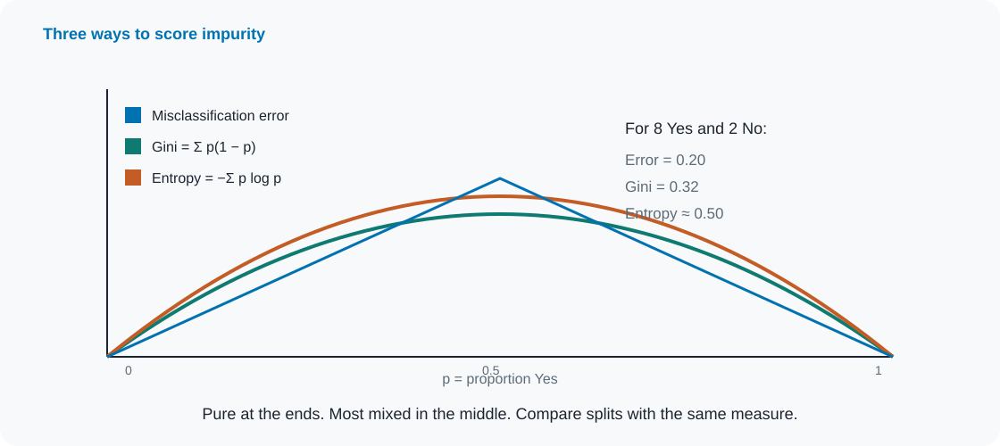
Why Gini helps
Split A
Error 0.25
Children: 30/10 and 10/30.
Weighted Gini = 0.375
Split B
Error 0.25
Children: 40/20 and 0/20.
Weighted Gini = 0.333 — Gini prefers the pure leaf.
Part 3
A full tree can memorize. We limit it on purpose.
Watch it grow
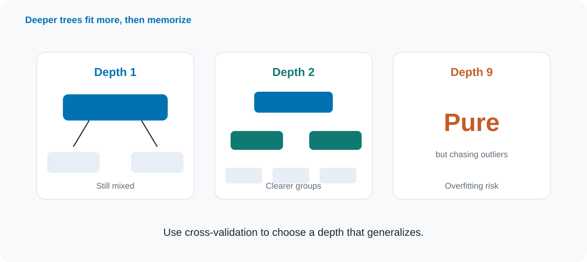
Control complexity
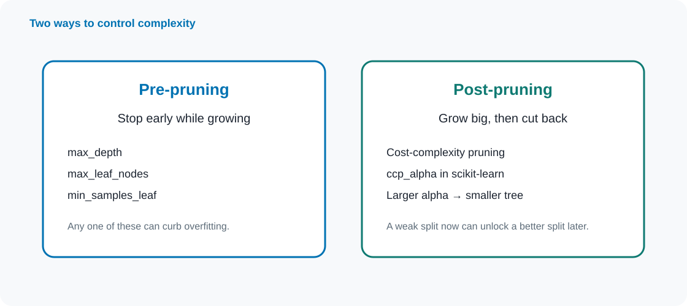
Cost complexity
\( \text{score} = \text{training error} + \alpha \times (\text{number of leaves}) \)
α = 0
Full tree
No charge for complexity.
Moderate α
Best subtree
Chosen by cross-validation.
Large α
Just the root
Almost no splits left.
Part 4
Rules, feature importance, and what they cannot say.
How to read it
Test
feature ≤ cut
True goes left. False goes right.
samples
Who arrives
How many training rows reach the node.
value
Class counts
In classification: counts per class. The majority is the prediction.
Feature importance
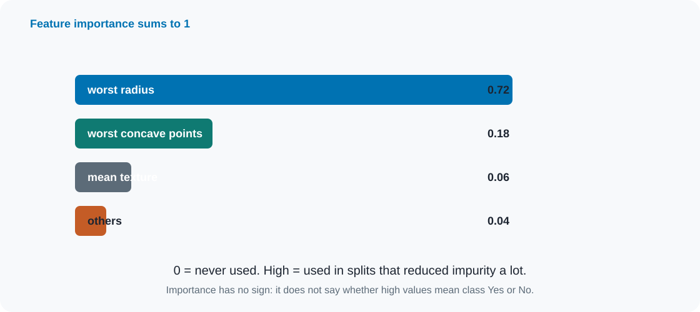
Be careful
No direction
Importance is never negative. It does not say whether high values mean class Yes or No.
Low ≠ useless
Another feature may already carry the same information, so this one is skipped.
Not causal
A high score is about impurity reduction in this tree, not a causal claim.
Trees vs lines
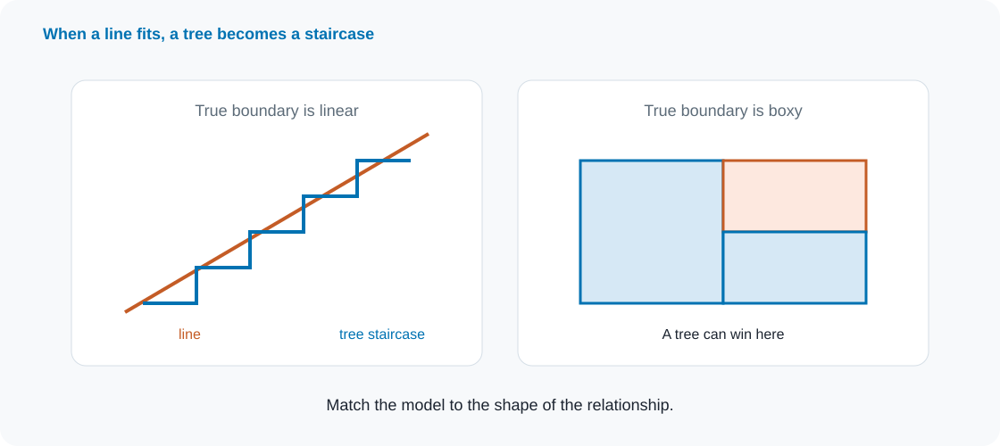
A hard limit
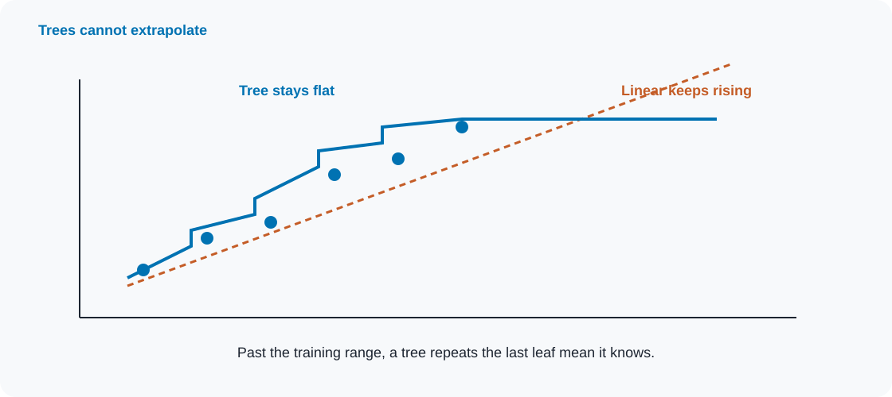
Tradeoffs
Strengths
Easy to read and explain.
Capture nonlinear patterns.
No feature scaling required.
Handle numeric and encoded categorical predictors.
Weaknesses
Deep trees overfit.
High variance: small data changes, different trees.
A single tree is often weaker than an ensemble.
Cannot extrapolate beyond training leaves.
Quick check
Keep these
Lab and readings
Lab: fit, prune, and read trees on Heart (classification) and Hitters (regression).
Readings: ISLP Chapter 8. Müller and Guido, Chapter 2.
Next: combine many trees to reduce variance — bagging, random forests, boosting.